Using Azure AD B2C to secure your Azure Functions Apps¶
Manual Guide by Saurabh Sharma.
If you want to use Azure Function Apps and need a way to secure access to your Function Apps – that is, only allowing authenticated users, then Azure AD B2C is a great solution. It allows users to create their own accounts or using a social identity provider, and gain access to the your Function apps only after they have successfully authenticated. This document is a step-by-step guide to configuring Azure AD B2C, as the identity provider for your Azure Function Apps.
Create your Azure function app – easiest way is to select +Create a Resource , type in “function app” to find it, select Function App, and select Create
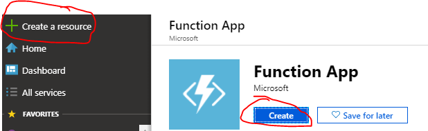Enter your unique Azure Function App name – copy the name to a text editor -we will need it in subsequent steps. Complete the rest of the information and select Create.
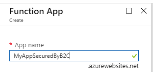Go back to the Function App blade in the Azure Portal, and select the Azure function app that you created. From the Function App blade, select Platform Features and then select Authentication/Authorization.
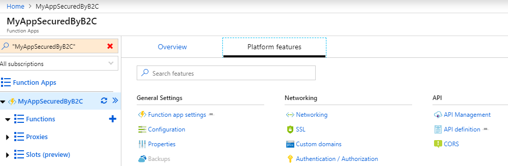Move the App Service Authentication to the On Position, which then expose a number of settings available for Authentication. Note that the default is “Allow Anonymous request” – allowing any user to access your function application.
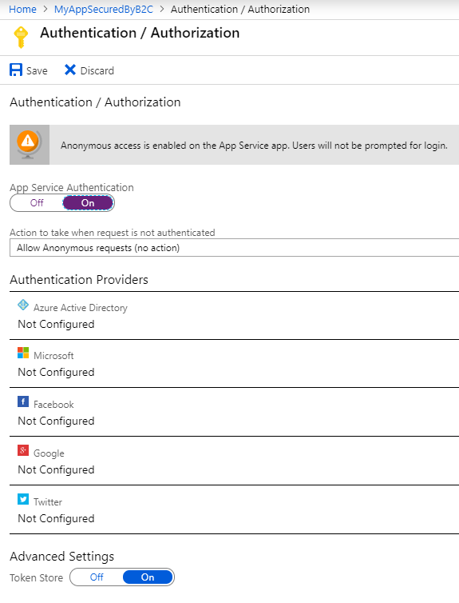We will now select “Log in with Azure Active Directory”, which is one of the available options in the drop down box labeled “Action to take when request is not authenticated”
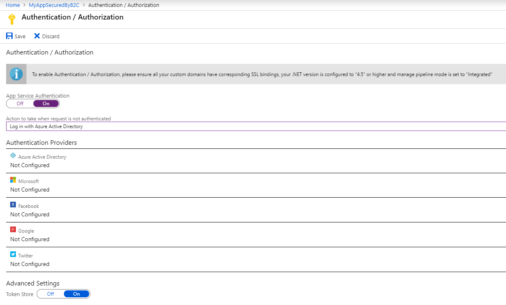After this select “Azure Active Directory” under the list of Authentication Providers, this will open a new configuration blade, select “Advanced” and note the required fields, including Client ID and Issuer Uri – the Client Secret and Allowed Token Audiences are option fields. Go to the next steps to collect the application Client ID and Issuer URI values from B2C.
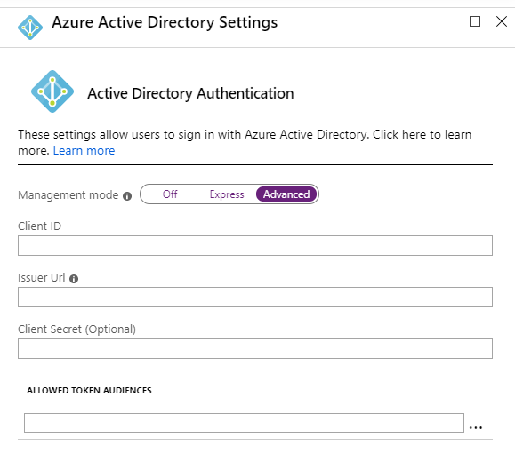Create a new B2C application. From the Azure Portal (optionally, you can open a separate browser tab or new browser session, keeping the previous blade open/available), go to your B2C Tenant Blade, and select Applications, then select +Add to create a New Application. In the New Application blade, give the app a friendly name, Select Yes for Web App/ Web API option, in the Reply URL section, enter in the full Azure website name that you created in step 2, and append it with:
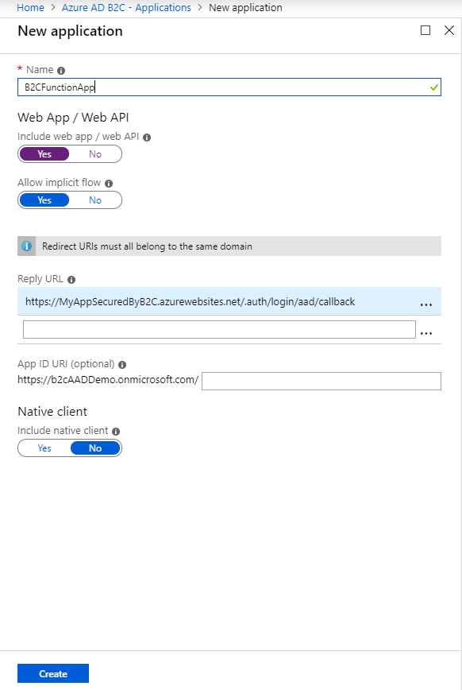/.auth/login/aad/callback. For example:https://myAppSecuredByB2C.azurewebites.net/.auth/login/aad/callback. Select Create.Collect B2C Application ID. After successfully creating the application, go back to the B2C Admin Portal Application blade, find your newly created application and open the profile to collect the Application ID – copy this B2C application ID – this will be used to finish the Azure Function configuration.
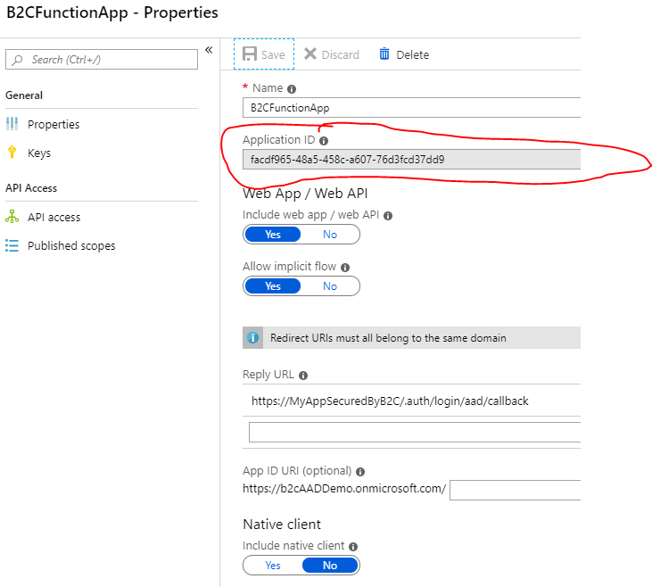Collect B2C OpenID Connect Metadata URL endpoint. Go to the top level Azure AD B2C blade, and select User Journeys, and select a Sign In Sign Up policy (or any other policy that you have created, and select the “Run user flow” button – once the blade is opened copy the Openid Metadata endpoint
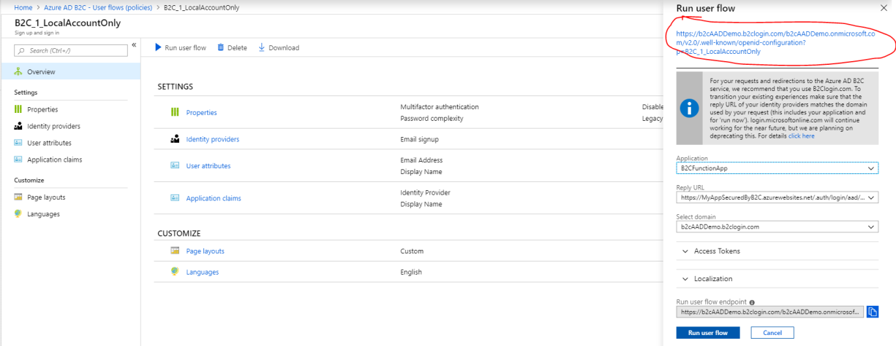Return to the Azure Function blade, and navigate to the Platform Settings -> Authentication/Authorization -> Azure Active Directory Settings – enter the B2C Application ID into the Client ID property. Similarly, enter in the B2C Open ID Connect metadata URL into the Issuer URI property. Select OK to finish the configuration.
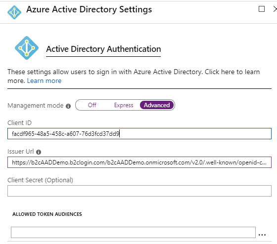Validation and Testing. The configuration on both the B2C application side as well as the Azure Function is now complete.
Attempting to access your Function App will now require authentication. Validate that un-authenticated users will get prompted to complete their B2C sign-in before being allowed access to your Function App. This can be easily executed from the Run userflow button from each B2C User Flow Policy. Make sure to select the Application representing your Azure Function App in the Application drop down picker dialog, and the associated Reply URL (in some cases you many have more than one reply URL).
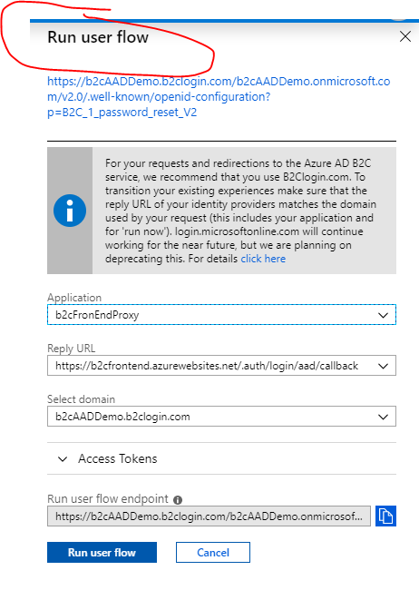Other tests
Clear browser session cookies, validate that user must authenticate when attempt to access your Azure Function.
After successful Function App access, try opening a separate browser tab, and validate that you can automatically sign-in.
Try to run other user flows, such as password reset or profile edit, with your Azure Function – after the users complete these flows, the will be redirected to the Azure Function App.